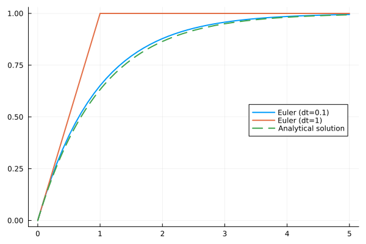

Homework 1: Solving an ODE#
Given an ordinary differential equation:
with initial condition \(x(t=0)=0.0\)
Part 1: Julia’s ODE solver#
Please solve the ODE using OrdinaryDiffEq.jl (optionally ModelingToolkit.jl) for \(t \in [0, 5]\) and plot the time series. Compare it to the analytical solution in one plot.
Part 2: The forward Euler method#
Please try a range of time steps (e.g. from 0.1 to 1.5) to solve the ODE using the forward Euler method below for \(t \in [0.0, 5.0]\), plot the time series, and compare them to the analytical solution in one figure. What happened when dt gets larger? Describe your results and show them in the figure.
About the forward Euler method
We plot the trajectory as a straight line locally. In each step, the next state variables (\(\vec{u}_{n+1}\)) are accumulated by the time step (dt) multiplied the derivatives (slope) at the current state (\(\vec{u}_{n}\)):
The ODE model. Exponential decay in this example.
function model(u, p, t)
return 1 .- u[1]
end
model (generic function with 1 method)
Forward Euler method
Inputs:
model: the ODE model which returns the derivative(s) of the state variable(s)u: state variable(s)p: parameter(s)t: time in the modeldt: time step
Outputs: state variable(s) of the next time step.
euler(model, u, p, t, dt) = u .+ dt .* model(u, p, t)
euler (generic function with 1 method)
A simple ODE solver
Inputs:
model: the ODE model which returns the derivative(s) of the state variable(s)u0: initial conditions of the state variable(s)tspan: time span in the model, written as(tstart, tend)p: parametersdt: time stepmethod: stepping method. Defaults to the Forward Euler methodeuler
function mysolve(model, u0, tspan, p; dt=0.1, method=euler)
# Time points
ts = tspan[begin]:dt:tspan[end]
# States at those time points
us = zeros(length(ts), length(u0))
# Initial conditions
us[1, :] .= u0
# Iterations in a for loop
for i in 1:length(ts)-1
us[i+1, :] .= method(model, us[i, :], p, ts[i], dt)
end
# Return results
return (t = ts, u = us)
end
mysolve (generic function with 1 method)
Time span, parameter(s), and initial condition(s)
tspan = (0.0, 5.0)
p = nothing
u0 = 0.0
0.0
Solve the problem
sol01 = mysolve(model, u0, tspan, p, dt=0.1, method=euler)
sol1 = mysolve(model, u0, tspan, p, dt=1.0, method=euler)
(t = 0.0:1.0:5.0, u = [0.0; 1.0; … ; 1.0; 1.0;;])
Analytical solution
analytical(t) = 1 - exp(-t)
analytical (generic function with 1 method)
Visualization
using Plots
Plots.default(linewidth=2)
plot(sol01.t, sol01.u, label="Euler (dt=0.1)")
plot!(sol1.t, sol1.u, label = "Euler (dt=1)")
plot!(analytical, tspan[begin], tspan[end], label = "Analytical solution", linestyle=:dash, legend=:right)

Part 3: The RK4 method#
Please try some time steps to solve the ODE using the (home-grown) fourth order Runge-Kutta (RK4) method for \(t \in [0.0, 5.0]\), plot the time series, and compare them to the analytical solution and the solution by the Forward Eular method (of the same dt). Which method is more accurate? Please show your results in the figure.
About the RK4 method
We use 4 additional intermediate steps to eliminate some of the nonlinear (higher order) errors in the integration. In each iteration, the next state \(\vec{u}_{n+1}\) is:
Hint: you can replace the Euler method with the RK4 one to reuse the mysolve() function.
# Forward Euler stepper
euler(model, u, p, t, dt) = u .+ dt .* model(u, p, t)
# Your RK4 stepper
function rk4(model, u, p, t, dt)
### calculate k1, k2, k3, and k4 here ###
next = u .+ (k1 .+ 2k2 .+ 2k3 .+ k4) ./ 6
return next
end
sol = mysolve(model, u0, tspan, p, dt=1.0, method=rk4)
This notebook was generated using Literate.jl.